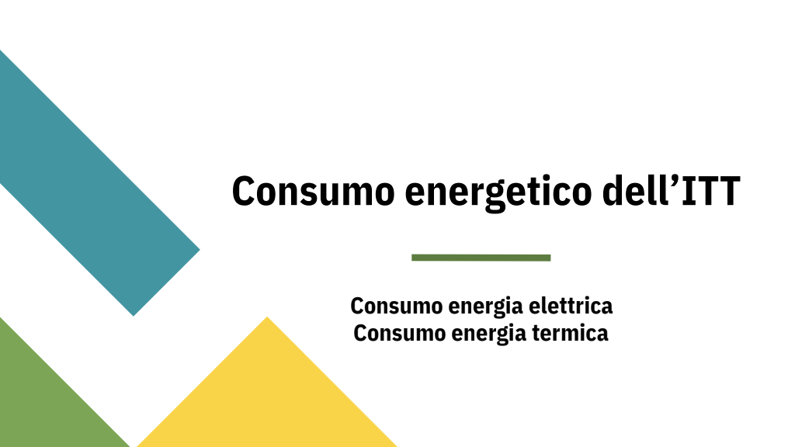
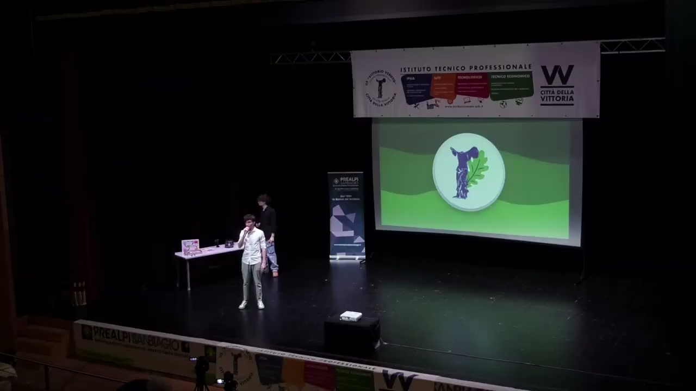
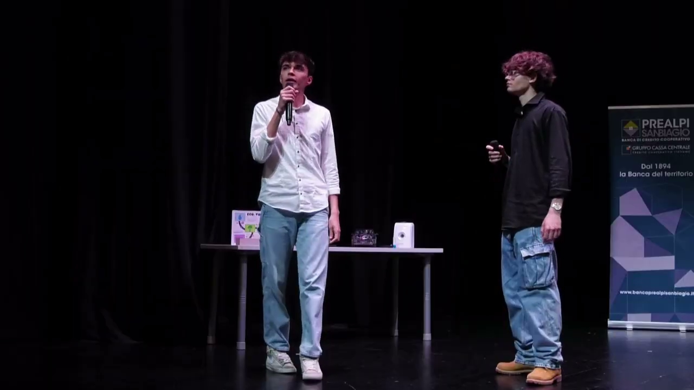
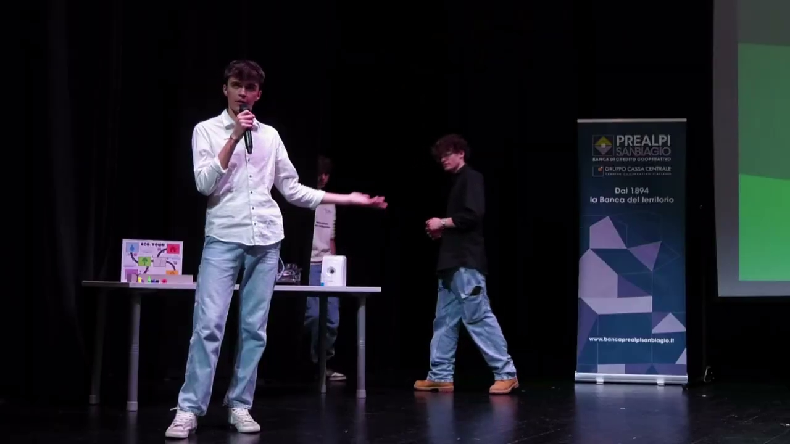
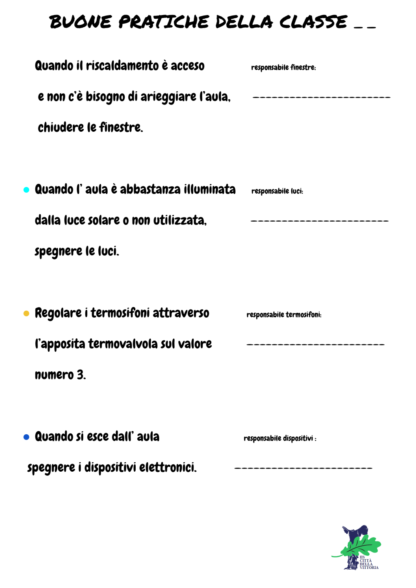
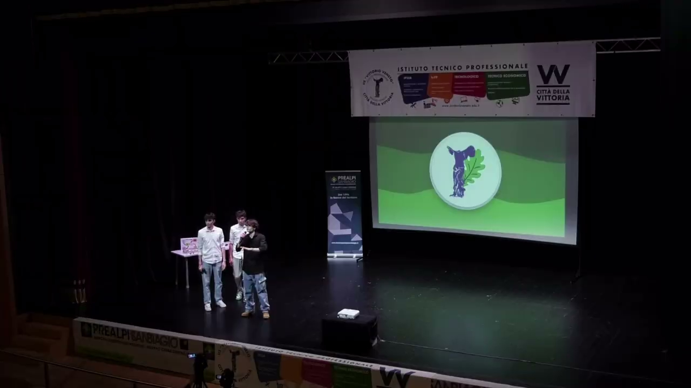
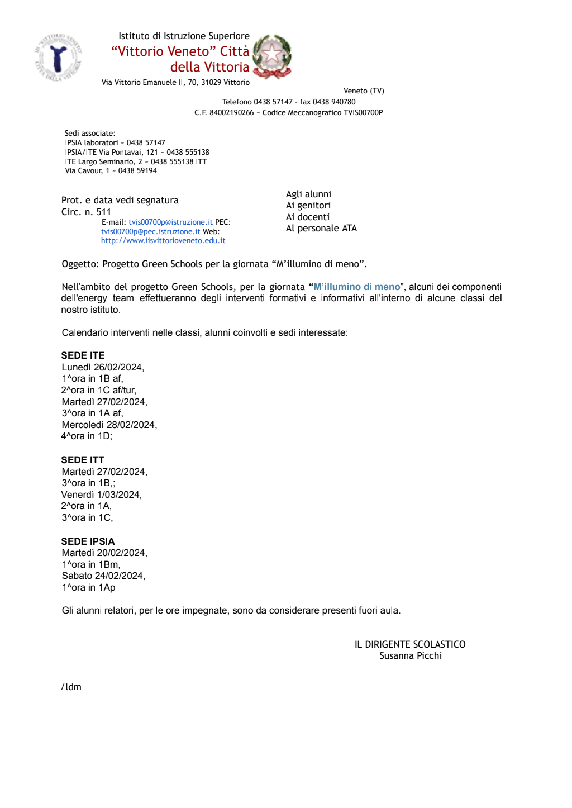
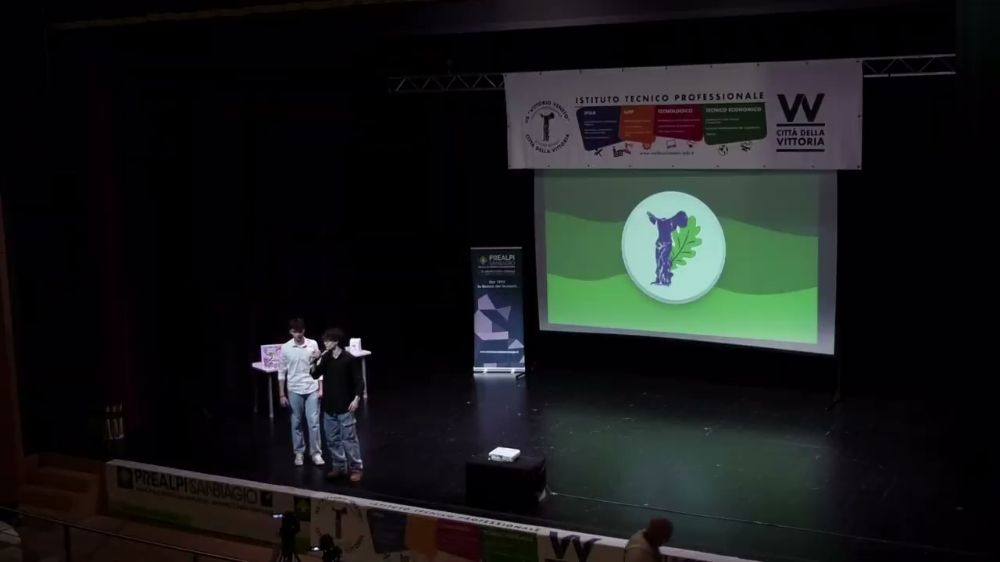
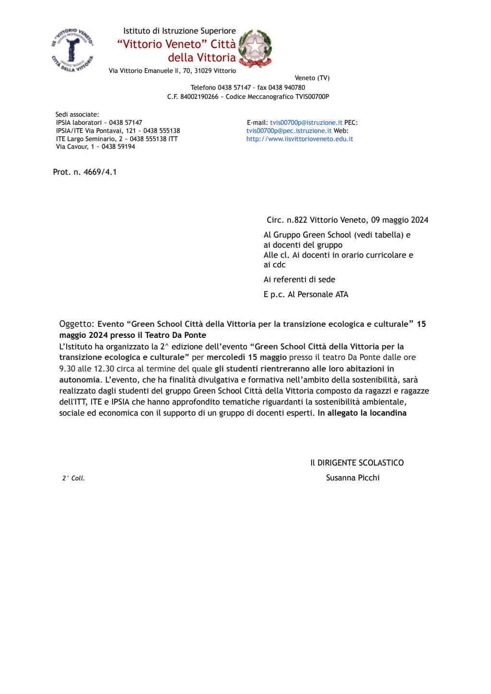

Progetti realizzati
Sons of the Desert, World Calculator, sondaggio competenze ambientali, campagne social e presentazione conclusiva al Teatro Da Ponte.
Innovazione digitale e partecipazione attiva: progetti educativi ad alto impatto, strumenti interattivi e forte coinvolgimento della comunita scolastica.
L'Energy Team ha integrato educazione ambientale, comunicazione digitale e progettazione tecnico-creativa per rafforzare consapevolezza e comportamenti sostenibili.
Sons of the Desert, World Calculator, sondaggio competenze ambientali, campagne social e presentazione conclusiva al Teatro Da Ponte.
Docenti: Montoro Iuliano Francesco, Rizzo Erika, Carambia Giuseppe, Filieri Daniele, Beggiato Matteo, La Malfa Flavio. Collaboratori: Massaro Simone.
Sviluppo di prodotti educativi digitali, maggiore partecipazione scolastica e consolidamento della rete con istituzioni e territorio.
Le raccolte fotografiche complete sono archiviate in ambiente riservato e non pubblicate integralmente per gestione controllata dei materiali.
Approfondimenti pubblici:








